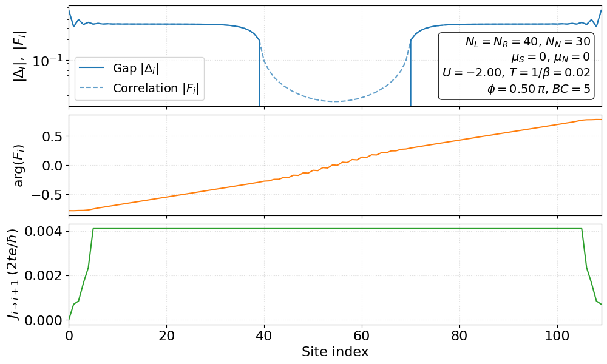
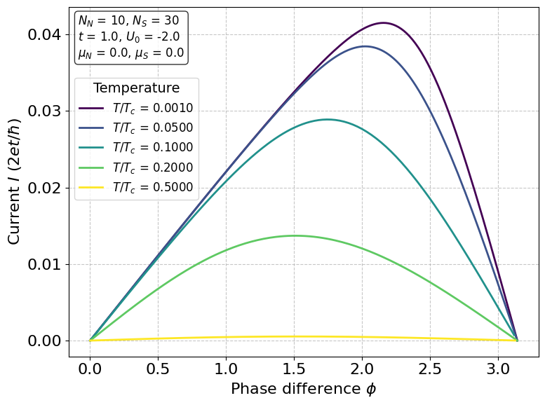
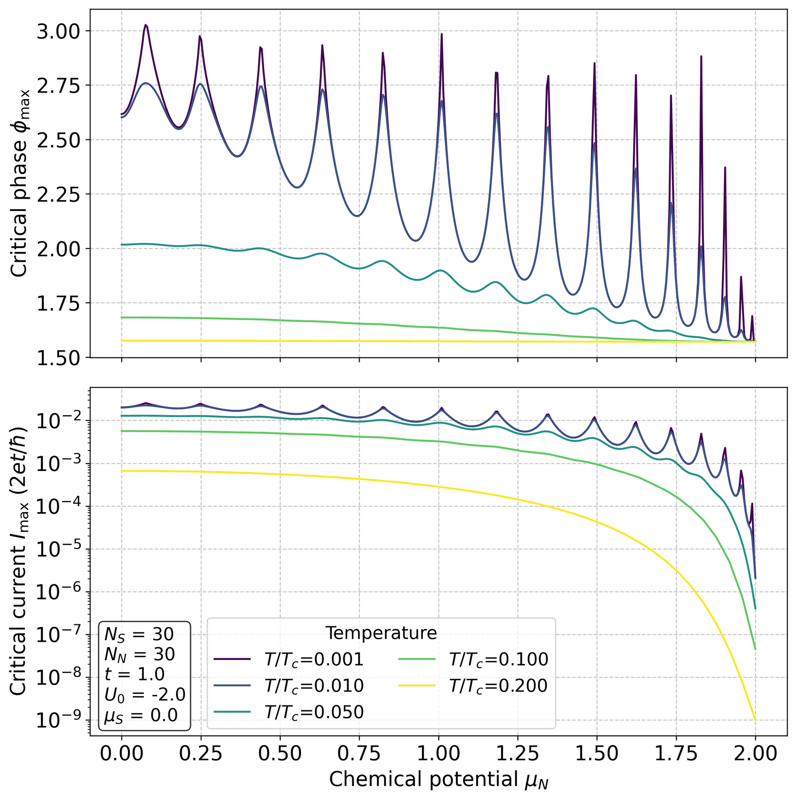
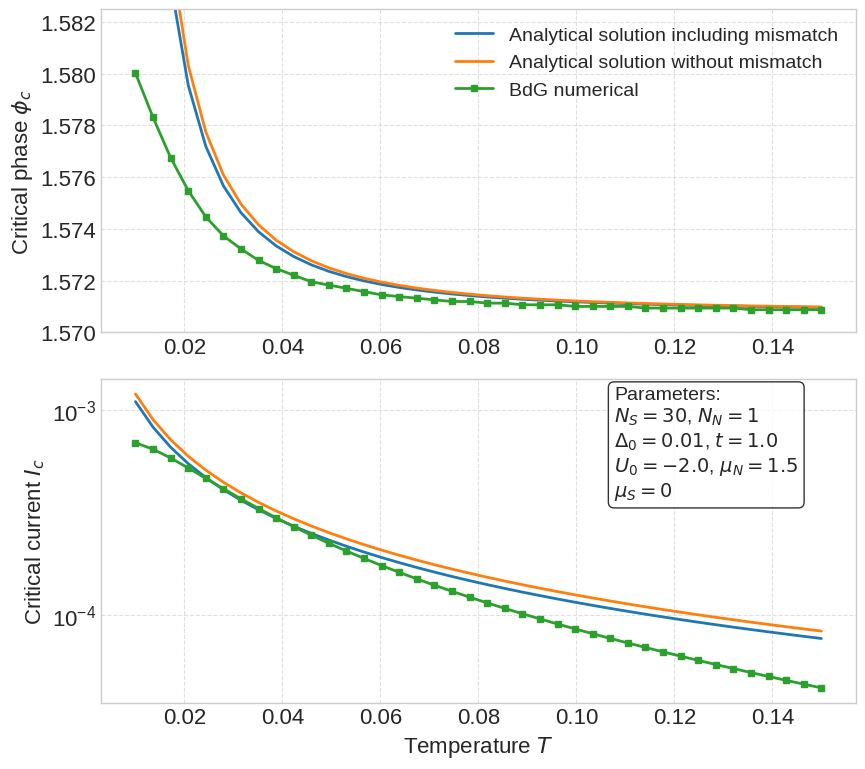
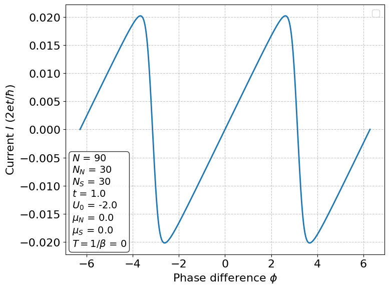
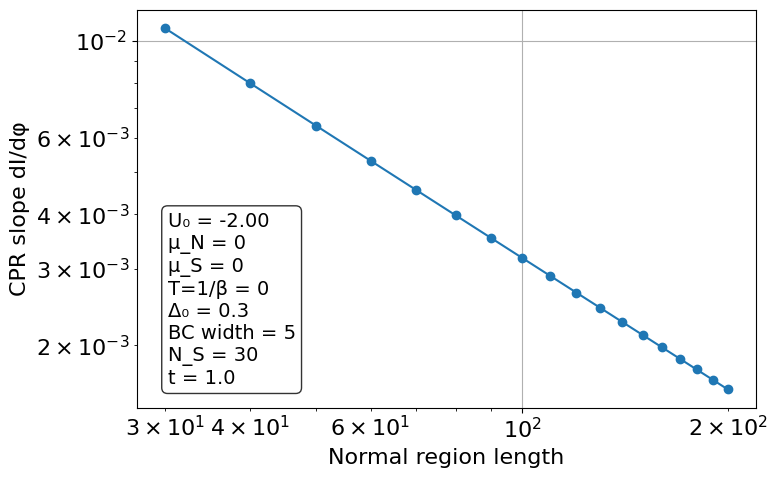

BdG study of SNS Josephson junctions
KTH Royal Institute of Technology, Stockholm · Spring 2026 · Research project
Summary
In a Josephson junction, a current flows without dissipation between two superconductors separated by a weak link, and its value depends on the phase difference $\phi$ between them. I wrote a self-consistent tight-binding Bogoliubov-de Gennes (BdG) solver in Python for one-dimensional junctions whose weak link is a normal metal (SNS junctions), and used it to compute this current-phase relation for junctions of varying length, temperature and transparency.
The simulations recover the main analytical limits: the $\sin(\phi/2)$ shape of short transparent junctions, the single-channel Beenakker formula with Fabry-Pérot oscillations when the normal region reflects electrons, and the Ishii sawtooth of long junctions.
Question
A tunnel junction has a sinusoidal current-phase relation (CPR), $I(\phi) = I_{\max}\sin\phi$. SNS junctions can deviate strongly from this shape. Analytical theories give closed-form CPRs, but only under idealized assumptions (short or long junction, step-like gap profile).
The project asks how the skewness of the CPR, measured by the critical current $I_{\max}$ and the phase $\phi_{\max}$ at which it is reached, depends on temperature, junction length and normal-region transparency, and how far the analytical formulas describe a self-consistent lattice calculation.
Model and method
Tight-binding model
The junction is a chain of $N = 2N_S + N_N$ sites with nearest-neighbour hopping $t$, chemical potential $\mu_S$ in the superconducting leads and $\mu_N$ in the normal region, and an on-site attraction $U < 0$ in the leads only. There is no interface barrier: the only source of normal reflection is a Fermi-wavevector mismatch $\mu_N \neq \mu_S$. After a mean-field decoupling of the attractive Hubbard interaction, the quasiparticle amplitudes $(u_i^{(n)}, v_i^{(n)})$ and energies $E_n$ are the eigenvectors and eigenvalues of the $2N \times 2N$ BdG matrix
$$ \mathcal{H}_{ij} = \begin{pmatrix} h_{ij} & \Delta_i\,\delta_{ij} \\ \Delta_i^{*}\,\delta_{ij} & -h_{ij}^{*} \end{pmatrix}, \qquad h_{ij} = -\mu_i\,\delta_{ij} - t\,(\delta_{i,j+1} + \delta_{i+1,j}) . $$Self-consistency
The order parameter must satisfy the gap equation, with $\beta = 1/k_B T$:
$$ \Delta_i = -\frac{U}{2} \sum_{n} u_i^{(n)} v_i^{(n)*} \tanh\!\left(\frac{\beta E_n}{2}\right) . $$Starting from a step profile, the solver diagonalises $\mathcal{H}$, recomputes $\Delta_i$, mixes the old and new profiles, and repeats until convergence. The supercurrent on each bond follows from the continuity equation and sums over all eigenstates:
$$ J_{j\to i} = \frac{2e}{\hbar}\, \mathrm{Im}\!\left( t_{ij} \sum_{n} \left[ u_i^{(n)*} u_j^{(n)}\, n_F(E_n) + v_i^{(n)} v_j^{(n)*}\, n_F(-E_n) \right] \right) . $$Energies are in units of $t$, lengths in lattice sites and currents in units of $2et/\hbar$.
Phase boundary conditions
- Fixed phase in the leads (FPL). The phases $\mp\phi/2$ are imposed on the whole leads, so the full phase drop occurs across the normal region. The leads then carry no supercurrent, which violates current conservation, but the complete CPR is accessible.
- Fixed phase at the boundaries (FPB). Only the outermost sites are pinned. The leads develop a phase gradient and current is conserved; the phase difference seen by the normal region is smaller than the applied one.
FPB is used for long junctions where it can reach the critical current, FPL for short ones. To test analytical formulas under their own assumptions, the solver can also diagonalise once with a frozen step-function gap.
Analytical references
For a short junction ($L \ll \xi_0$, with $\xi_0 = \hbar v_F/\Delta_0$ the coherence length), the current is carried by one pair of Andreev bound states. With a normal region of transmission probability $\mathcal{T}$, the single-channel Beenakker formula reads
$$ I(\phi) = \frac{e\Delta_0}{2\hbar}\, \frac{\mathcal{T}\sin\phi}{\sqrt{1 - \mathcal{T}\sin^2(\phi/2)}}\, \tanh\!\left( \frac{\Delta_0}{2k_B T} \sqrt{1 - \mathcal{T}\sin^2(\phi/2)} \right) . $$For $\mathcal{T} = 1$ it reduces to the ballistic result $I \propto \sin(\phi/2)\tanh\!\big(\Delta_0\cos(\phi/2)/2k_BT\big)$, and for $\mathcal{T} \ll 1$ to $I \propto \sin\phi$. For a chemical-potential mismatch, matching plane waves at the two interfaces gives
$$ \mathcal{T} = \left[ 1 + \frac{(k_{F,N}^2 - k_{F,S}^2)^2}{4\,k_{F,N}^2 k_{F,S}^2} \sin^2(k_{F,N} L) \right]^{-1}, $$which equals one whenever $k_{F,N} L = m\pi$ (Fabry-Pérot resonances). For a long ballistic junction ($L \gg \xi_0$) at zero temperature, the Ishii result is a sawtooth:
$$ I(\phi) = \frac{e v_F}{\pi L}\,\phi, \qquad |\phi| < \pi . $$Results






In long junctions, the current was also split into the contributions of the bound states ($|E| < \Delta_0$) and of the continuum ($|E| > \Delta_0$): the two nearly cancel, and their sum is the linear sawtooth.
My contribution
I am the sole author of the report and of the code: the solver package, one script per figure, the stored simulation data and the tests. The report also contains the analytical derivations (Andreev reflection amplitudes, bound-state condition, mismatch transmission) that the simulations are compared with.
Limits and open questions
- Neither boundary condition is fully satisfactory: FPL does not conserve current in the leads, and FPB cannot reach the critical current of short junctions. A fully current-conserving scheme, with a self-consistently adjusted phase gradient in the leads, exists in the literature and was not implemented here.
- The agreement with the Beenakker formula is qualitative. A significant quantitative discrepancy remains, attributed to the approximations made when computing the transmission $\mathcal{T}$ from the chemical potentials.
- The model is strictly one-dimensional (a single channel), s-wave, and has no interface barrier.
- The coherence length estimated from the Fermi velocity ($\xi_0 \approx 20$ sites) is only approximate; in practice the effective value is closer to 10 sites.
- In long junctions $\phi_{\max}(T)$ is weakly non-monotonic, with a minimum before it rises to $\pi/2$ near $T_c$. This is observed with both boundary conditions and is reported without an analytical explanation.